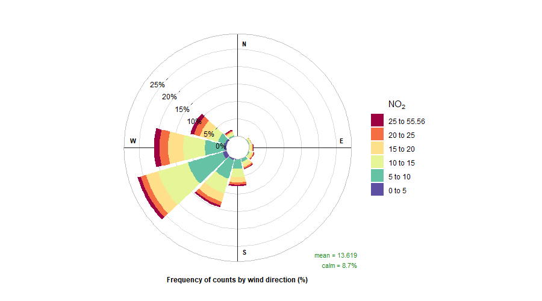
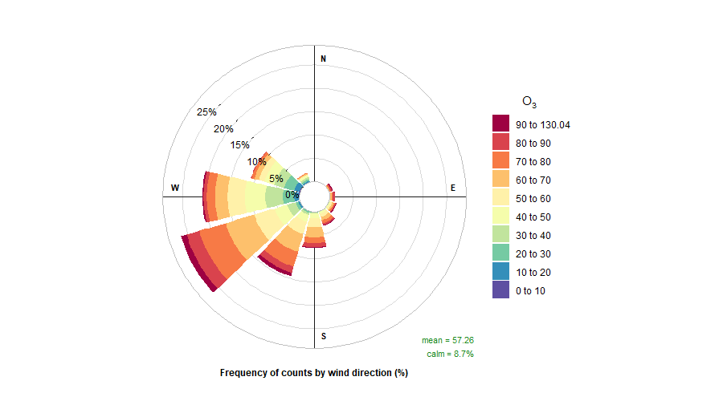
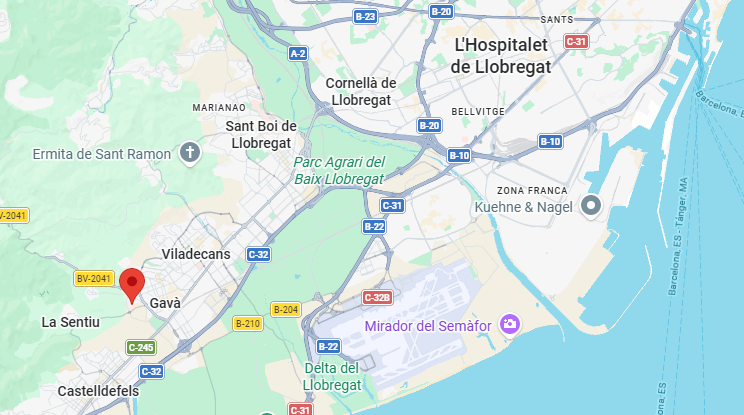
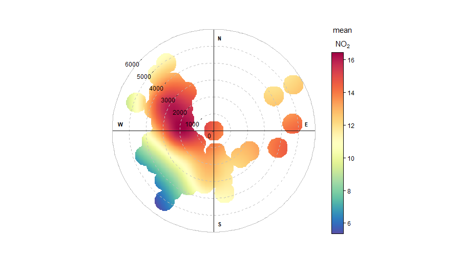
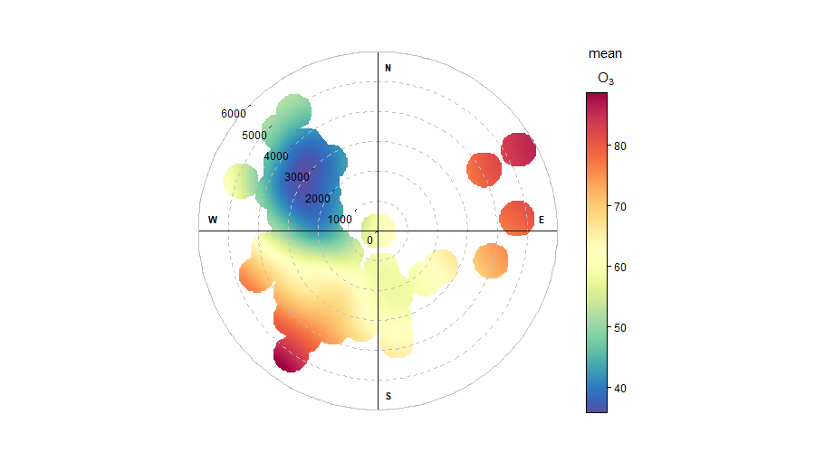
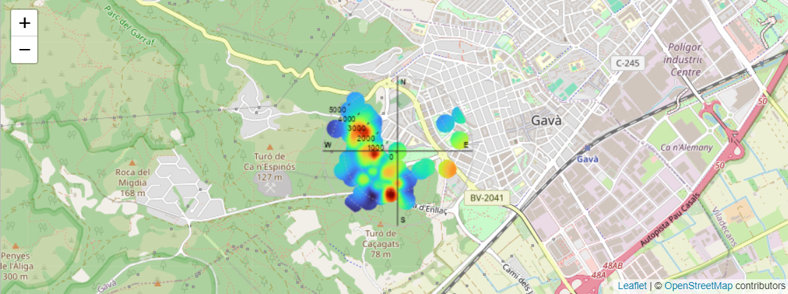
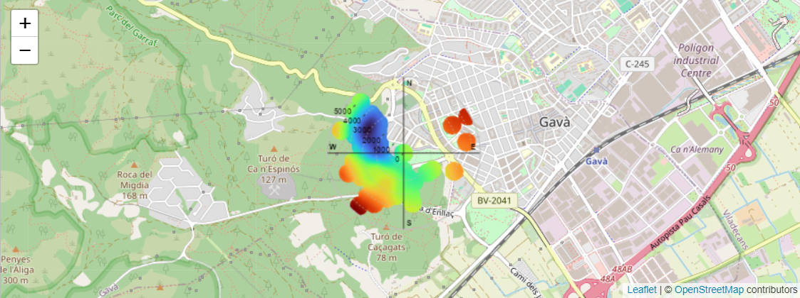
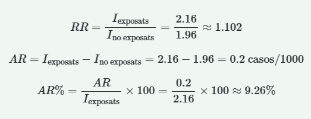
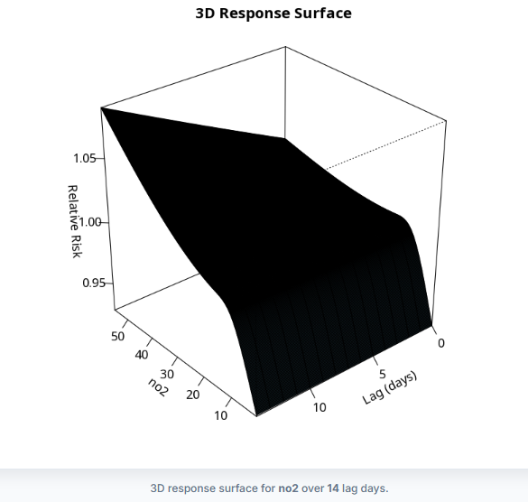
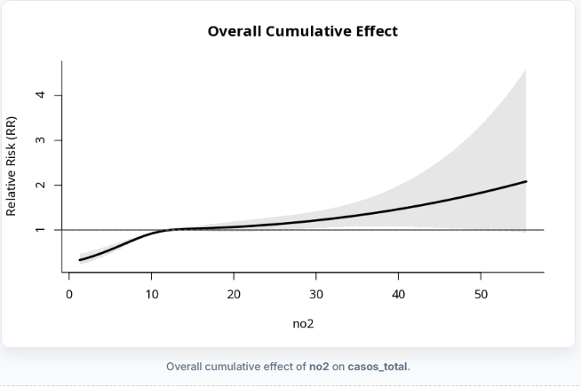

Air pollution, meteorological conditions and respiratory infections in Baix Llobregat. A 14-year spatiotemporal analysis.
The objectives of this research project are:
- David and Marc are studying all data from Gavà that is a city located in Baix Llobregat county. In this county we are using data from Air Pollution Prevention and Monitoring Network (XPVCA in catalan) corresponding to hourly data of air pollutants from year 2004 to 2025. Data included: benzene (C6H6), carbon monoxide (CO), nitric oxide (NO), nitrogen dioxide (NO2), nitrogen oxides (NOx), ozone (O3) and sulphur dioxide (SO2).
- Meteorological data is not available from Meteocat XEMA (Meteorological data server of Catalonia), so we choose the nearest meteorological station that is El Prat de Llobregat. The data structure is based on semi-hourly data that is, data every 30 minutes from 2011. Data included: temperature, relative humidity, pressure, wind direction, wind speed and solar irradiance.
- Respiratory infection data are collected from the Information System for Infection Surveillance in Catalonia (SIVIC) using data from region 75, that is Barcelona Metropolitan south region 122 and 123 are the identificators of the Primary care centre from Gavà.
Air Pollutants in Gavà (2004–2025)
.png)
This image shows the time variation of several air pollutants measured in Gavà between 2004 and 2025, and it was generated in RStudio using a time variation analysis. The pollutants included in the study are C6H6, CO, NO, NO2, NOx, O3 and SO2. The results show clear daily and weekly patterns. Traffic-related pollutants such as NO, NO2 and NOx present noticeable peaks during the morning hours on weekdays, which are mainly associated with commuting traffic and higher human activity. These peaks tend to decrease during the afternoon and are generally lower during weekends, reflecting reduced traffic levels. In contrast, ozone (O3) shows an opposite behaviour, with lower concentrations in the early morning and higher values during the afternoon due to photochemical processes driven by solar radiation. The monthly variation also indicates seasonal differences, with higher ozone levels during spring and summer, while nitrogen oxides tend to be more elevated in winter when atmospheric dispersion is lower. Overall, the analysis illustrates how air pollution levels in Gavà are influenced by traffic emissions, daily activity patterns and seasonal meteorological conditions.
Benzene (C6H6) in Gavà

This image shows the evolution of benzene (C6H6) concentrations in Gavà over time, displaying the average levels by month and hour for each year. The colour scale represents the mean concentration, where warmer colours indicate higher values and cooler colours indicate lower ones. From the available data, benzene levels appear generally low and relatively stable, although some variations can be observed depending on the time of day and the period of the year. Higher concentrations tend to appear during certain hours of the day, which may be related to traffic activity and local emission sources. In the most recent years, especially from around 2019 onwards, some periods show slightly higher values compared with earlier years, although the overall pattern remains fairly consistent. This type of visualization helps to identify temporal patterns and possible changes in benzene levels over the years, highlighting how concentrations can vary depending on both seasonal factors and daily activity patterns.
Carbon Monoxide (CO) in Gavà

This image shows the trend level of carbon monoxide (CO) concentrations in Gavà over time, presenting the average values by month and hour for each year. The colour scale represents the mean concentration, where warmer colours indicate higher levels and cooler colours indicate lower ones. Overall, CO concentrations remain relatively low but show some temporal variations depending on the time of day and the period of the year. Higher values can occasionally be observed during certain hours, which may be associated with traffic activity and urban emission sources. Across the years displayed, the general pattern remains fairly consistent, although some periods show slightly higher concentrations, especially in more recent years. This visualization helps to identify temporal patterns and understand how CO levels change over time according to daily activity and seasonal conditions.
Nitric Oxide (NO) in Gavà

This image shows the trend level of nitric oxide (NO) concentrations in Gavà over time, presenting the average values by month and hour for each year. The colour scale represents the mean concentration, where warmer colours indicate higher levels and cooler colours indicate lower ones. In general, NO concentrations vary depending on the time of day and the period of the year. Higher values tend to appear during certain hours, especially in the morning and evening, which can be related to periods of greater traffic activity and urban emissions. Some seasonal differences can also be observed, with slightly higher concentrations in particular months, possibly influenced by meteorological conditions that affect the dispersion of pollutants. Although there are small variations between years, the overall pattern remains quite similar over time, with recurring daily peaks and comparable seasonal behaviour. This type of visualization helps to identify temporal patterns and makes it easier to understand how NO levels change according to daily human activity and seasonal conditions.
Nitrogen Dioxide (NO2) in Gavà

This image shows the trend level of nitrogen dioxide (NO2) concentrations in Gavà over time, presenting the average values by month and hour for each year. The colour scale represents the mean concentration, where warmer colours indicate higher levels and cooler colours indicate lower ones. In general, NO2 concentrations vary throughout the day and across different periods of the year. Higher values are usually observed during certain hours, especially in the morning and evening, which are commonly associated with higher traffic activity and urban emissions. Some seasonal differences can also be seen, with slightly higher concentrations during the colder months, when atmospheric conditions tend to limit the dispersion of pollutants. Although there are some differences between years, the overall pattern remains relatively consistent over time, with recurring daily peaks and similar seasonal behaviour. This visualization helps to identify temporal patterns and better understand how NO2 levels change depending on daily human activity and seasonal conditions.
Nitrogen Oxides (NOx) in Gavà

This image shows the trend level of nitrogen oxides (NOx) concentrations in Gavà over time, presenting the average values by month and hour for each year. The colour scale represents the mean concentration, where warmer colours indicate higher levels and cooler colours indicate lower ones. In general, NOx concentrations vary throughout the day and across different periods of the year. Higher values tend to appear during specific hours, especially in the morning and evening, which are commonly related to periods of increased traffic activity and urban emissions. Some seasonal differences can also be observed, with slightly higher concentrations during colder months, when atmospheric conditions can limit the dispersion of pollutants. Although there are variations between years, the overall pattern remains relatively similar over time, showing recurring daily peaks and comparable seasonal behaviour. This type of visualization helps to identify temporal patterns and provides a better understanding of how NOx levels change depending on daily human activity and seasonal conditions.
Ozone (O3) in Gavà

This image shows the trend level of ozone (O3) concentrations in Gavà over time, presenting the average values by month and hour for each year. The colour scale represents the mean concentration, where warmer colours indicate higher levels and cooler colours indicate lower ones. In general, O3 concentrations vary throughout the day and across different periods of the year. Higher values tend to appear during the central hours of the day, especially in the afternoon, when sunlight intensity is greater and photochemical reactions are more active. Seasonal differences can also be observed, with higher concentrations usually occurring during the warmer months, particularly in late spring and summer, when stronger solar radiation and higher temperatures favour the formation of ozone. Lower concentrations are more common during winter months and nighttime hours, when photochemical activity is weaker. Although there are some variations between years, the overall pattern remains relatively similar over time, showing recurring daily peaks during daylight hours and a clear seasonal cycle. This type of visualization helps to identify temporal patterns and provides a better understanding of how O3 levels change depending on solar radiation, atmospheric chemistry, and seasonal environmental conditions.
Sulphur Dioxide (SO2) in Gavà

This image shows the trend level of sulphur dioxide (SO2) concentrations in Gavà over time, presenting the average values by month and hour for each year. The colour scale represents the mean concentration, where warmer colours indicate higher levels and cooler colours indicate lower ones. In general, SO2 concentrations vary throughout the day and across different periods of the year. Higher values tend to appear during certain hours of the day, often around the middle of the day and early afternoon, while lower concentrations are more common during nighttime hours. Some seasonal differences can also be observed, with slightly higher concentrations appearing in certain months depending on the year, while other periods show lower and more stable levels. Although there are variations between years, the overall pattern remains relatively consistent, with moderate fluctuations in concentration levels over time. This type of visualization helps to identify temporal patterns and provides a better understanding of how SO2 levels change depending on daily activity patterns and seasonal atmospheric conditions.
Benzene (C6H6) – Gavà

This image shows the trend level of benzene (C6H6) concentrations in Gavà during 2025, presenting the average values by day for each month of the year. The colour scale represents the mean concentration, where warmer colours indicate higher levels and lighter colours indicate lower ones. In general, benzene concentrations vary throughout the year, with some days showing higher values highlighted in darker orange and reddish tones, while many other days remain at lower or moderate levels. Higher concentrations appear sporadically during certain periods, particularly in late winter and early summer months, whereas other months show more stable and lighter colour patterns indicating lower concentrations. Some seasonal differences can be observed, as certain months present slightly higher values on specific days, possibly related to local emissions, atmospheric conditions, or daily activity patterns. Although there are fluctuations across different days and months, the overall pattern remains relatively consistent, with moderate variations in benzene concentration levels over time. This type of visualization helps identify temporal patterns and provides a clearer understanding of how benzene levels change during different periods of the year.
Carbon monoxide (CO) – Gavà

This image shows the trend level of carbon monoxide (CO) concentrations in Gavà during 2025, presenting the average values by day for each month of the year. The colour scale represents the mean concentration, where warmer colours indicate higher levels and lighter colours indicate lower ones. In general, CO concentrations vary throughout the year, with several days showing higher values highlighted in darker orange and red tones, while other days remain at lower or moderate levels. Higher concentrations appear more frequently during late summer and early autumn, particularly in months such as September and October, where darker colours indicate more pronounced peaks. During the winter and spring months, the values tend to remain more moderate and stable, with fewer intense peaks. Some seasonal differences can therefore be observed, possibly influenced by local emission sources, meteorological conditions, and variations in daily human activities. Although daily fluctuations occur across the months, the general pattern remains relatively consistent, with moderate variations in carbon monoxide concentration levels throughout the year. This type of visualization helps to identify temporal patterns and provides a clearer understanding of how CO levels change during different periods of the year.
Nitric oxide (NO) – Gavà

This image shows the trend level of nitric oxide (NO) concentrations in Gavà during 2025, presenting the average values by day for each month of the year. The colour scale represents the mean concentration, where warmer colours indicate higher levels and lighter colours indicate lower ones. In general, NO concentrations vary throughout the year, with several days showing higher values highlighted in darker orange and red tones, while other days remain at lower or moderate levels. Higher concentrations appear more frequently during the winter months, particularly in January, February, and December, where darker colours indicate more pronounced peaks. During the spring and summer months, the values tend to be lower and more stable, with lighter colours dominating most days. Some seasonal differences can therefore be observed, possibly influenced by traffic emissions, atmospheric dispersion conditions, and variations in daily human activity. Although daily fluctuations occur across the months, the general pattern remains relatively consistent, with moderate variations in nitric oxide concentration levels throughout the year. This type of visualization helps to identify temporal patterns and provides a clearer understanding of how NO levels change during different periods of the year.
Nitrogen dioxide (NO2) – Gavà

This image shows the trend level of nitrogen dioxide (NO2) concentrations in Gavà during 2025, presenting the average values by day for each month of the year. The colour scale represents the mean concentration, where warmer colours indicate higher levels and lighter colours indicate lower ones. In general, NO2sub> concentrations vary throughout the year, with several days showing higher values highlighted in darker orange and red tones, while other days remain at lower or moderate levels. Higher concentrations appear more frequently during the winter months, particularly in January, February, and December, where darker colours indicate more pronounced peaks. During the spring and summer months, the values tend to be lower and more stable, with lighter colours dominating most days. Some seasonal differences can therefore be observed, possibly influenced by traffic emissions, atmospheric dispersion conditions, and variations in daily human activity. Although daily fluctuations occur across the months, the overall pattern remains relatively consistent, with moderate variations in nitrogen dioxide concentration levels throughout the year. This type of visualization helps to identify temporal patterns and provides a clearer understanding of how NO2 levels change during different periods of the year.
Nitrogen oxides (NOx) – Gavà

This image shows the trend level of nitrogen oxides (NOx) concentrations in Gavà during 2025, presenting the average values by day for each month of the year. The colour scale represents the mean concentration, where warmer colours indicate higher levels and lighter colours indicate lower ones. In general, NOx concentrations vary throughout the year, with several days showing higher values highlighted in darker orange and red tones, while other days remain at lower or moderate levels. Higher concentrations appear more frequently during the winter months, particularly in January, February, and December, where darker colours indicate more pronounced peaks. During the spring and summer months, the values tend to be lower and more stable, with lighter colours dominating most days. Some seasonal differences can therefore be observed, possibly influenced by traffic emissions, atmospheric dispersion conditions, and variations in daily human activity. Although daily fluctuations occur across the months, the overall pattern remains relatively consistent, with moderate variations in nitrogen oxides concentration levels throughout the year. This type of visualization helps to identify temporal patterns and provides a clearer understanding of how NOx levels change during different periods of the year.
Ozone (O3) – Gavà

This image shows the trend level of ozone (O3) concentrations in Gavà during 2025, presenting the average values by day for each month of the year. The colour scale represents the mean concentration, where warmer colours indicate higher levels and lighter colours indicate lower ones. In general, O3 concentrations vary throughout the year, with several days showing higher values highlighted in darker orange and red tones, while other days remain at lower or moderate levels. Higher concentrations appear more frequently during the late spring and summer months, particularly from May to August, where darker colours indicate more pronounced peaks. During the winter months, the values tend to be lower and more stable, with lighter colours dominating most days. These seasonal differences are typical of ozone formation, which is strongly influenced by solar radiation, temperature, and photochemical reactions involving precursor pollutants. Although daily fluctuations occur across the months, the overall pattern shows a clear seasonal cycle, with higher ozone levels during warmer periods and lower concentrations in colder months. This type of visualization helps to identify temporal patterns and provides a clearer understanding of how O3 levels change during different periods of the year.
Sulphur dioxide (SO2) – Gavà

This image shows the trend level of sulphur dioxide (SO2) concentrations in Gavà during 2025, presenting the average values by day for each month of the year. The colour scale represents the mean concentration, where warmer colours indicate higher levels and lighter colours indicate lower ones. In general, SO2 concentrations vary throughout the year, with several days showing slightly higher values highlighted in darker orange and red tones, while many other days remain at relatively low or moderate levels. Occasional peaks can be observed during certain periods of the year, particularly in spring and early summer, where darker colours indicate temporary increases in concentration. During other months, especially in late summer and parts of winter, the values tend to remain more stable and generally lower, with lighter colours appearing more frequently. These variations may be influenced by factors such as industrial activity, fuel combustion, atmospheric dispersion conditions, and meteorological changes. Although daily fluctuations occur across the months, the overall pattern suggests relatively low sulphur dioxide concentrations throughout the year. This type of visualization helps to identify temporal patterns and provides a clearer understanding of how SO2 levels change during different periods of the year.
SIVIC COVID-19 (Gavà – ABS 1)

This image shows the evolution of daily COVID-19 cases recorded in the SIVIC surveillance system for Gavà (ABS 1) between 28 January 2020 and 9 February 2026. The horizontal axis represents the date, and the vertical axis represents the number of reported cases per day. Several waves of infection can be observed throughout the pandemic period. The largest peak appears around early 2022, when daily cases rise to more than 100 cases, which corresponds to the large wave linked to the spread of the Omicron variant. Earlier waves during 2020 and 2021 show smaller increases but still reflect significant transmission periods. After mid-2022, the number of cases decreases considerably and remains relatively low, with only occasional small spikes, suggesting lower circulation of the virus and possible changes in testing or reporting practices. In total, the dataset records 10,210 cases, with an average of 6.8 cases per day, illustrating the progression of the pandemic from multiple waves to a more stable and lower level of infection over time.
SIVIC COVID-19 (Gavà – ABS 2)

This image shows the evolution of daily COVID-19 cases recorded in the SIVIC epidemiological surveillance system for Gavà (ABS 2) between 5 December 2019 and 15 February 2026. The horizontal axis represents the date, and the vertical axis shows the number of reported cases per day. The graph displays several waves of infection throughout the pandemic period. The most prominent peak occurs in early 2022, when daily cases rise to around 160 cases, corresponding to the large wave associated with the spread of the Omicron variant. Earlier increases during 2020 and 2021 represent previous pandemic waves, with smaller but still significant rises in reported cases. After mid-2022, the number of daily cases decreases considerably and remains relatively low, with only occasional minor spikes, suggesting reduced transmission and possible changes in testing or reporting practices. In total, the dataset records 12,841 cases, with an average of 8.3 cases per day, illustrating the progression of the pandemic from multiple waves of infection to a more stable and lower level of circulation of the virus over time.
SIVIC FLU (Gavà – ABS 1)

This image shows the evolution of daily influenza (grip) cases recorded in the SIVIC epidemiological surveillance system for Gavà (ABS 1) between 5 October 2011 and 18 February 2026. The horizontal axis represents the date, while the vertical axis shows the number of reported cases per day. The graph displays a clear seasonal pattern, with recurrent peaks appearing almost every winter period, which is typical of influenza transmission. Most years show moderate increases in cases during the colder months, followed by declines during spring and summer when influenza circulation is lower. Some seasons, such as 2017–2018, 2018–2019, and 2025–2026, show higher peaks, with daily cases reaching more than 20–30 cases, indicating stronger influenza outbreaks during those seasons. During the COVID-19 pandemic period (2020–2021), influenza activity appears noticeably reduced, which may be related to public health measures such as mask use, social distancing, and reduced mobility. In total, the dataset records 4,475 cases, with an average of 3.3 cases per day, highlighting the typical cyclical and seasonal nature of influenza circulation over time.
SIVIC FLU (Gavà – ABS 2)

The image shows a time-series graph of flu (grip) cases recorded in the ABS Gavà-2 health area from October 5, 2011 to February 21, 2026. The horizontal axis represents the date, while the vertical axis shows the number of cases reported each day. Across the timeline, the graph displays many spikes where the number of cases increases quickly and then drops again. These spikes represent periods when flu outbreaks occur. Most of the time the number of cases stays low, often between zero and a few cases per day, but during certain moments the values rise sharply, sometimes reaching around 20–30 cases in a single day. The pattern repeats many times throughout the years, which suggests a seasonal behavior typical of influenza, where cases increase strongly during specific periods, usually winter, and remain much lower during the rest of the year. At the bottom of the dashboard, a summary indicates that a total of 4,550 cases were recorded during the whole period and that the average number of daily cases is about 3.2. Overall, the image illustrates how flu cases fluctuate over time with recurring peaks that correspond to epidemic waves.
What is the origin of air pollution in Gavà?
To know the origin of air pollution in Gavà is easy with RStudio.
We only need data in columns named ws for wind speed, wd for wind direction and to choose a pollutant e.g.: NO2 and O3. These are conditions of the openair library in order to create a pollution rose with the instruction: pollutionRose(cityall, pollutant="no2")
As you can see in the following image Gavà air pollution comes from L'Hospitalet de Llobregat city area and from Barcelona.



How can we analyse air pollution in Gavà using a polar plot?
Air pollution patterns in Gavà can also be analysed using a polar plot in RStudio.
To create a polar plot with the openair library, we need data columns named ws (wind speed) and wd (wind direction), together with the pollutant we want to study, such as NO2 or O3. The plot can be generated with the command: polarPlot(cityall, pollutant = "no2")
A polar plot helps us identify how pollutant concentrations vary according to both wind direction and wind speed. Higher concentrations shown in specific directions may indicate possible pollution sources affecting Gavà.
As shown in the image below, the highest NO2 and 3 concentrations are associated with winds coming from the direction of Barcelona and L'Hospitalet de Llobregat, suggesting that these urban and industrial areas may influence air quality in Gavà.


How can we visualise air pollution using a polar map?
The polarMap() function from the openairmaps library allows us to display several polar plots on an interactive map.
To create this map, the dataset newcityall must contain wind speed (ws), wind direction (wd), a latitude column named lat, a longitude column named lon, a monitoring station column named site, and the pollutant to analyse, such as NO2 or O3. The map can be generated with the following command: polarMap( newcityall, pollutant = "no2", latitude = "lat", longitude = "lon", popup = "site" )
This visualisation combines geographic information with wind patterns, allowing us to compare pollutant concentrations between different monitoring stations and identify possible pollution sources affecting Gavà.
As shown in the image below, the highest NO2 and O3 concentrations are associated with winds coming from the direction of Barcelona and L'Hospitalet de Llobregat, suggesting that these urban and industrial areas may influence air quality in Gavà.
NO2:

O3:

Risk Indicators (RR, AR, AR%)
The days were divided according to whether NO₂ exceeded the WHO daily guideline value (25 µg/m³):
- 🔴 High exposure (NO₂ > 25): 282 days, mean incidence = 2.16 cases/1000
- 🟢 Low exposure (NO₂ ≤ 25): 4858 days, mean incidence = 1.96 cases/1000

Relative Risk (RR): 1.11 (95% CI: 1.08–1.13), p < 0.001
Attributable Risk (AR): 0.21 (95% CI: 0.16–0.25) cases/1000, p < 0.001
Attributable Fraction (AR%): 9.5% (95% CI: 7.4–11.6), p < 0.001
In Gavà, the statistical results show a significant association between the studied factor and the increase in the analyzed cases. The Relative Risk (RR = 1.11; 95% CI: 1.08–1.13; p < 0.001) indicates that the exposed population has an approximately 11% higher risk of developing the condition compared to the non-exposed population. Since the confidence interval does not include the value 1 and the p-value is lower than 0.001, this relationship is considered highly statistically significant. Regarding the Attributable Risk (AR = 0.21 cases per 1000 inhabitants; 95% CI: 0.16–0.25; p < 0.001), the results suggest that the studied exposure is associated with an additional increase of 0.21 cases per 1000 inhabitants. This represents the absolute burden of cases that could be directly attributed to the analyzed factor. Finally, the Attributable Fraction (AR% = 9.5%; 95% CI: 7.4–11.6; p < 0.001) indicates that approximately 9.5% of the observed cases in Gavà could be related to this exposure. In other words, nearly one out of every ten cases could potentially be prevented if this risk factor were eliminated or reduced. The statistical significance values reinforce the robustness of the obtained results.
Poisson Model
k = number of observed cases
λ = mean incidence rates
- λ₁ = 2.16 (High exposure)
- λ₀ = 1.96 (Low exposure)
Poisson formula: P(X = k) = (λk e-λ) / k!
🔴 High exposure:
P(X = 2) = (2.162 × e-2.16) / 2! = 0.269 → 26.9%
🟢 Low exposure:
P(X = 2) = (1.962 × e-1.96) / 2! = 0.271 → 27.1%
P(X = 2) represents the probability of observing 2 respiratory infection cases per 1000 inhabitants using a Poisson mathematical model based on 14 years (2011–2025) of daily data on respiratory infections and different atmospheric pollutants (NO₂, SO₂, O₃, etc.) collected from the two primary healthcare centers in Gavà. The data were obtained from the official databases of the Generalitat de Catalunya: XPVCA (Xarxa de Prevenció i Vigilància de la Contaminació Atmosfèrica) and SIVIC (Sistema d’Informació per a la Vigilància d’Infeccions a Catalunya). The results indicate that the probability of observing 2 respiratory infections per 1000 inhabitants in Gavà is 27.1% when NO₂ levels are low, while under high NO₂ exposure the probability is 26.9%. These calculations were performed considering whether NO₂ concentrations exceeded the WHO guideline limit of 25 µg/m³. To obtain a weighted average that incorporates the different proportions of days with high and low pollution levels, Bayes’ theorem was subsequently applied.
Bayes’ Theorem
🔴 High exposure (NO₂ > 25): 282 days
🟢 Low exposure (NO₂ ≤ 25): 4858 days
Total analyzed days: 5140
- High exposure: (282 / 5140) × 100 = 5.49%
- Low exposure: (4858 / 5140) × 100 = 94.51%
P(Event) = (0.0549 × 0.269) + (0.9451 × 0.271) ≈ 0.40
The application of Bayes’ theorem to NO₂ levels in Gavà makes it possible to analyze the probability associated with days of high and low atmospheric pollution exposure. During the study period, 282 days with high exposure (NO₂ > 25 µg/m³) and 4858 days with low exposure (NO₂ ≤ 25 µg/m³) were recorded, giving a total of 5140 analyzed days. This means that only 5.49% of the days showed high pollution levels, whereas 94.51% corresponded to days with low NO₂ concentrations. Using these proportions together with the probabilities obtained from the Poisson model, Bayes’ theorem provides an overall probability of 0.40. This result indicates that, when considering both the frequency of polluted days and the probability associated with each exposure level, the estimated probability for the analyzed event is approximately 40%. The results also show that although highly polluted days are relatively infrequent, their contribution to the overall behavior of the studied phenomenon remains relevant.
DLNM Model (Distributed Lag Non-Linear Model)
The Distributed Lag Non-Linear Model (DLNM) was developed by Antonio Gasparrini et al. (2010). This mathematical model is used to analyze the relationship between atmospheric pollutants and health effects over time. Pollutants do not always produce an immediate impact on health; in many cases, their effects may appear days later. These models are considered "non-linear" because the relationship between pollution and respiratory diseases is not proportional. If the relationship were linear, an increase in pollution would always produce a proportional increase in respiratory cases. However, this is not exactly how real environmental systems behave. For example, an increase of 5 µg/m³ of NO₂ does not have the same effect when concentrations rise from 5 to 10 µg/m³ as when they rise from 40 to 45 µg/m³. Therefore, the relationship follows a curve rather than a straight line. The delayed effects are known as lags. A lag can range from 0 to 14 days in this study. A lag equal to 0 means there is no delay between pollution exposure and the health effect, whereas a lag of 14 indicates that up to two weeks may pass between the pollution peak and the increase in respiratory health problems.

Image 1 shows the 3D response surface for NO₂. This graph illustrates the combined relationship between pollutant concentration, lag time, and Relative Risk (RR). Higher NO₂ concentrations tend to be associated with increased RR values, especially at specific lag days. The surface is neither flat nor linear, confirming that the effect of the pollutant changes depending on both concentration and time since exposure. This demonstrates that atmospheric pollution behaves as a complex environmental factor whose respiratory health effects may appear in a delayed manner.

Image 2 shows the overall cumulative effect of NO₂ across all lag days. In this graph, the Relative Risk gradually increases as NO₂ concentrations rise. At low NO₂ levels, the RR remains below or close to 1, suggesting little or no excess respiratory risk. However, after approximately 10–15 µg/m³, the curve begins to rise progressively, and at higher concentrations the RR exceeds 2, indicating that respiratory risk may become more than twice as high compared with the reference level. The shaded confidence interval widens at higher concentrations, reflecting greater statistical uncertainty due to fewer observations at extreme pollution levels. Overall, the graph suggests that prolonged exposure to elevated NO₂ concentrations is associated with a substantial increase in respiratory health risk in Gavà.
Reference: Gasparrini, A.; Armstrong, B.; Kenward, M. G. (2010). Distributed lag non-linear models. Statistics in Medicine, 29(21), 2224–2234. DOI: https://doi.org/10.1002/sim.3940
FIANL CONCLUSION
This 14-year spatiotemporal analysis of air pollution, meteorological conditions, and respiratory infections in Gavà shows a consistent relationship between atmospheric pollution, weather variability, and public health outcomes in the Baix Llobregat area. The combined datasets from XPVCA, Meteocat (El Prat de Llobregat station), and SIVIC allow a detailed understanding of how environmental exposure affects respiratory disease patterns over time.The results show that traffic-related pollutants such as NO, NO₂, NOx, and CO follow strong daily, weekly, and seasonal cycles, with higher concentrations during commuting hours and winter months due to poorer atmospheric dispersion. In contrast, ozone shows an opposite pattern, with higher values in summer and during midday due to photochemical reactions driven by sunlight. Wind analysis (pollution roses, polar plots, and maps) indicates that major pollution sources affecting Gavà are linked to the urban and industrial areas of Barcelona and L'Hospitalet de Llobregat, confirming that regional transport plays a key role alongside local emissions.Meteorological conditions strongly influence these patterns, with wind speed, temperature, and solar radiation affecting both pollutant dispersion and chemical reactions. Stable atmospheric conditions lead to pollutant accumulation, while windy periods reduce concentrations. From a health perspective, influenza shows a clear winter seasonality, while COVID-19 shows large waves with a major peak during the Omicron variant period in 2022, followed by a decline in later years.The statistical analysis confirms a significant association between NO₂ exposure and respiratory infections, with a Relative Risk of 1.11 (95% CI: 1.08–1.13), meaning an 11% increased risk during high pollution days. The Attributable Fraction (9.5%) suggests that nearly one in ten cases could be linked to elevated NO₂ levels. Poisson and Bayesian models show that although high pollution days are less frequent, they still contribute meaningfully to overall risk. The DLNM analysis further shows that the effect of NO₂ is delayed and non-linear, with health impacts extending up to 14 days after exposure and increasing sharply at higher concentrations.Overall, the study demonstrates that air pollution in Gavà is mainly driven by regional metropolitan emissions, modulated by meteorological conditions, and significantly associated with increased respiratory health risks. These findings highlight the importance of long-term air quality control policies at both local and metropolitan levels to reduce exposure and improve public health.